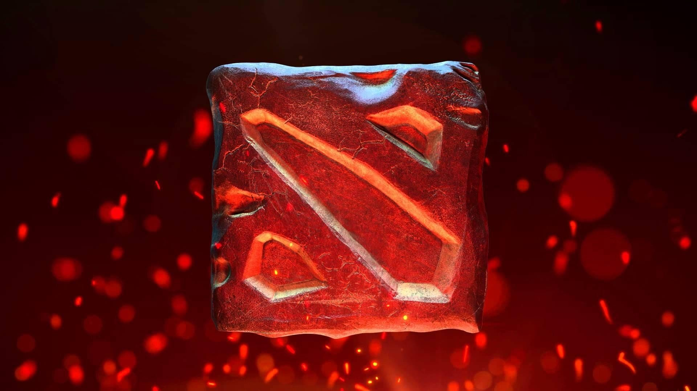

Игры
Назад
Counter-Strike: Global Offensive

Counter-Strike: Global Offensive (CS: GO)
Counter-Strike: Global Offensive (CS: GO) — популярный соревновательный командный шутер с видом от первого лица. Основная идеология — противостояние двух команд, а именно террористов против контр-террористов. В начале каждого раунда, вам предстоит выбрать одну из противоборствующих сторон и выполнить задание карты или устранить всех противников. При выполнении задания или уничтожения противников вы получаете деньги, которые можно потратить на покупку оружия, боеприпасов или амуниции.
Системные требования
Минимальные системки для игры:
Windows XP
Процессор: Intel Core 2 Duo
2 Gb ОЗУ
7.6 Gb HDD
nVidia GeForce 8800 Видеопамять: 512 Mb
Подробные и рекомендуемые требования к PC ищите на странице системных требований для Counter-Strike: Global Offensive.
Даты выхода
Counter-Strike: Global Offensive уже вышла на PC, PlayStation 3, Xbox 360, Mac.
Вышла:
PlayStation 3, Xbox 360 (Весь мир) — 22 августа 2012
PC, Mac (Весь мир) — 21 августа 2012
Полный список дат выхода и платформ смотрите на странице релизов.
Жанр и геймплей
Counter-Strike: Global Offensive – это многопользовательский, соревновательный, командный шутер от первого лица, реинкарнация CS: Source на улучшенном движке Valve. Вышла для PC, Mac, PS3 и Xbox 360 в 2012 году, но наибольшей популярностью пользуется на РС, где получает регулярные обновления, и проводятся киберспортивные турниры.
Разработчики не стали менять работающую годами геймплейную формулу, но улучшили сетевую часть, систему организации матчей, выбор снаряжения перед раундом, визуальную часть, добавили новые и улучшили старые карты. Появились глобальные и региональные списки лидеров.
Dota 2

Dota 2
Описание Dota 2
Dota 2 — многопользовательская ролевая стратегия в жанре MOBA, в которой игроки сражаются друг с другом в командах по пять человек, стараясь уничтожить главное здание на базе противника. Проект был разработан и выпущен компанией Valve 9 июля 2013 для ПК на Windows, Mac OS X и Linux.
Геймплей
В игре участвуют две команды по пять человек. Одна группа играет за сторону света на юге карты, а другая — тьмы на севере, при этом каждый пользователь управляет только одним персонажем. За матч он получает опыт, зарабатывает золото, открывает новые умения и покупает полезные предметы. Все ресурсы зарабатываются при уничтожении нейтральных и вражеских монстров, а также игроков из команды противника. Главная задача — уничтожение главного здания базы оппонента.
Dota 2 отличается от предшественника, оригинального фанатского мода для , рядом изменений. В игру была добавлена поддержка переподключения, возможность поставить паузу и присоединиться к любой незакрытой игре в качестве зрителя, встроенный голосовой чат и просмотр информации о нанесенном уроне убитому игроку. Появилось разделение игроков по географическим зонам (сейчас их всего четырнадцать: западная и восточная Европа, восток и запад США, Южная Америка, Россия, Индия, Южная Корея, Юго-Восточная Азия, Австралия, Чили, Перу, Дубай и Южная Африка). Впрочем, настроить территорию можно вручную. Valve также добавили систему повторов, позволяющую пересматривать матчи с большим количеством статистики и данных. Например, можно выбрать любую из камер и следить за разными персонажами. Повторы сохраняются в сервисе Steam Cloud, а потому их можно отправлять другим пользователям и хвастаться своей игрой.
PUBG
PUBG
Описание PUBG
PlayerUnknown’s Battlegrounds (сокр. PUBG, также известна как PUBG: Battlegrounds) — многопользовательская онлайн-игра в жанре королевской битвы, разрабатываемая и издаваемая студией PUBG Corporation, дочерней компанией корейского издателя Bluehole. Официальной дистрибуцией игры на территории России занимается Mail.Ru Group[3][4]. Игра основана на предыдущих модификациях для других игр, созданных Бренданом Грином (англ. Brendan Greene) под псевдонимом «PlayerUnknown», концепция которых была вдохновлена японским фильмом «Королевская битва» 2000 года. В итоге это привело к созданию самостоятельной игры, где Грин выступил в качестве ведущего геймдизайнера.
Игровой процесс
Каждый матч начинается с того, что все игроки прыгают с парашютом из самолёта над картой, площадь которой 2 x 2, 4 x 4, 6 х 6 или 8 x 8 км[9]. Маршрут полёта самолёта через карту выбирается случайным образом в начале матча, что требует от игроков быстро определить лучший момент для прыжка с парашютом[8]. Игроки начинают раунд без какой-либо экипировки, за исключением настраиваемой одежды, которая почти не влияет на игровой процесс. Как только игроки приземляются, они могут осматривать различные здания, постройки и другие сооружения в поиске оружия, транспортных средств, одежды, брони, тактического снаряжения, медикаментов и других вещей.
Standoff 2
Standoff 2
Описание Standoff 2
Standoff 2 — условно-бесплатная мобильная многопользовательская онлайн-игра в жанре шутера от первого лица, разработанная и изданная российской компанией Axlebolt в 2017 году для платформы Android[1], а в 2018 году для iOS[2][3][4].
Игровой процесс
Standoff 2 представляет собой классический шутер от первого лица с различными режимами игры и арсеналом современного российского и иностранного оружия. Каждое оружие обладает различным набором характеристик, ограничивающих тактические возможности игрока: пробиваемость брони, отдача, темп стрельбы, цена, награда за убийство, боезапас[5].
На начальных этапах игры доступны различные режимы игры, такие как закладка бомбы, командный бой, эскалация и другие. Когда игрок достигнет пятого уровня, ему откроется соревновательный режим[6] и режим «Союзники», матчи в котором проходят в формате 2х2.
В отличие от большинства мобильных шутеров, в Standoff 2 отсутствует автострельба и помощь в наведении, но в то же время есть и гибкая настройка управления: возможность перемещать, изменять видимость и размеры большей части элементов интерфейса. За реальные деньги в игре продаются только декоративные предметы, не влияющие на игровой процесс[7].
Критика и популярность> Критики неоднократно сравнивают игру Standoff 2 с Counter-Strike: Global Offensive и называют её мобильным клоном[2][3][6]. Сушант Рохан Сингх из PCQuest назвал игру самой лучшей из всех адаптаций CS:GO для мобильных устройств и идеальной игрой в жанре FPS, а также оценил, прежде всего, хорошую частоту кадров, приятный игровой процесс, скины и сильную защиту от читеров и хакеров. Сушант отметил, что, возможно, игра недостаточно оптимизирована, так как на некоторых телефонах наблюдаются задержки в работе приложения, но это явление характерно, по его мнению, для любой многопользовательской мобильной игры, или зависание связано с тем, что Standoff 2 не предназначена для работы на платформе MediaTek[2]. В третьем квартале 2021 года Standoff 2 вошёл в тройку самых доходных на российском рынке игр[8].